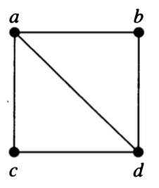
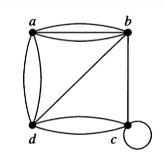

3 Graph Representations
3.1 4 Representations of Graphs
There are several ways to represent a (simple) graph. The efficiency of some graph algorithms depends on which representation is used to store the graph.
3.1.1 Edge Lists
An edge list simply lists off the edges (i.e., pairs of vertices) in the graph.
3.1.2 Adjacency Lists
For each vertex \(i\), a list of vertices \(j\) such that there is an edge from \(i\) to \(j\).
3.1.3 Adjacency Matrix
An adjacency matrix \(A\) is a square matrix with a row (and column) for each vertex.
- \(A_{ij} = 1\) if there is an edge from vertex \(i\) to vertex \(j\)
- \(A_{ij} = 0\) if there is not an edge from vertex \(i\) to vertex \(j\)
3.1.4 Incidence Matrix
An incidence matrix \(M\) has a row for each vertex and a column for each edge.
- \(M_{ij} = 1\) if edge \(j\) is incident with vertex \(i\).
- \(M_{ij} = 0\) if edge \(j\) is not incident with vertex \(i\).
3.2 Representation to Graphs
Draw graphs with the following representations.
- adjacency list
| vertex | adjacent vertices |
|---|---|
| 1 | 2, 3, 5 |
| 2 | 1 |
| 3 | 1, 4, 5 |
| 4 | 3, 5 |
| 5 | 1, 3, 4 |
- edge list: \(\{ \{1, 2\}, \{2, 3\}, \{3, 4\}, \{4, 5\}, \{1, 3\}, \{2, 4\}, \{3, 5\} \}\).
- adjacency matrix:
0 1 1 1
1 0 1 1
1 1 0 0
1 1 0 0- adjacency matrix:
0 1 1 0
1 0 0 1
1 0 0 1
0 1 1 0- adjacency matrix
0 1 0 0 1 1
1 0 1 1 0 1
0 1 0 0 1 1
0 1 0 0 1 0
1 0 1 1 0 1
1 1 1 0 1 0- incedence matrix
1 1 0 0 0 0
0 0 1 1 0 1
0 0 0 0 1 1
1 0 1 0 0 0
0 1 0 1 1 0- incedence matrix
1 1 1 0 0 0 0 0
0 1 1 1 0 1 1 0
0 0 0 1 1 0 0 1
0 0 0 0 0 0 1 1
1 0 0 0 1 1 0 0 Variations on the theme
Which of these representations can be used (perhaps with slight modification) with directed graphs? What adjustments do you need to make?
Which of these representations can be used (perhaps with slight modification) for graphs with multi-edges? What adjustments do you need to make?
Which of these representations can be used (perhaps with slight modification) for graphs with self-loops? What adjustments do you need to make?
3.3 Graph to representation
- Use each representation to represent the following graphs or say why it isn’t possible.


